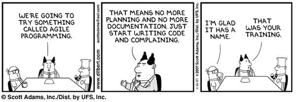

Agile scenario explained in a joke of ’Why did the chicken cross the road?’
—
THE BUSINESS ANALYST
I have twelve meetings today, I don’t have time to get into the whole user story. But I can tell you it involves a rooster on a distributed team.
SOCIAL MEDIA MANAGER
So the chicken can check in and oust the Mayor of the Other Side of the Road.
THE AGILE PROJECT MANAGER
The chicken is just not going to be able to cross the road this month. Crossing requirements were due last Friday. She will have to take her place on the backlog. Maybe the chicken can cross the road in Sprint 9.
WEB ANALYTICS
We’ll need to get some tags on that chicken to be able to tell you that.
THE BUSINESS OWNER
Because I have three other business initiatives riding on the chicken being on the other side of the road that were supposed to start six weeks ago. You’re killing me.
UX
The question isn’t why the chicken crossed the road. The question is why the chicken felt she had to cross the road. If a coop’s usability issues won’t allow chickens to complete their egg-laying tasks, they’ll bail that coop and find another one that will.
THE DEVELOPER
Because the requirements said so. The trebuchet was the most efficient method. Oh, she had to get to the other side alive? Where was that in the requirements?
SCRUM MANAGER
Let’s iterate, people. Let’s get the chicken to the center line today, and we’ll talk about the rest of the way tomorrow.